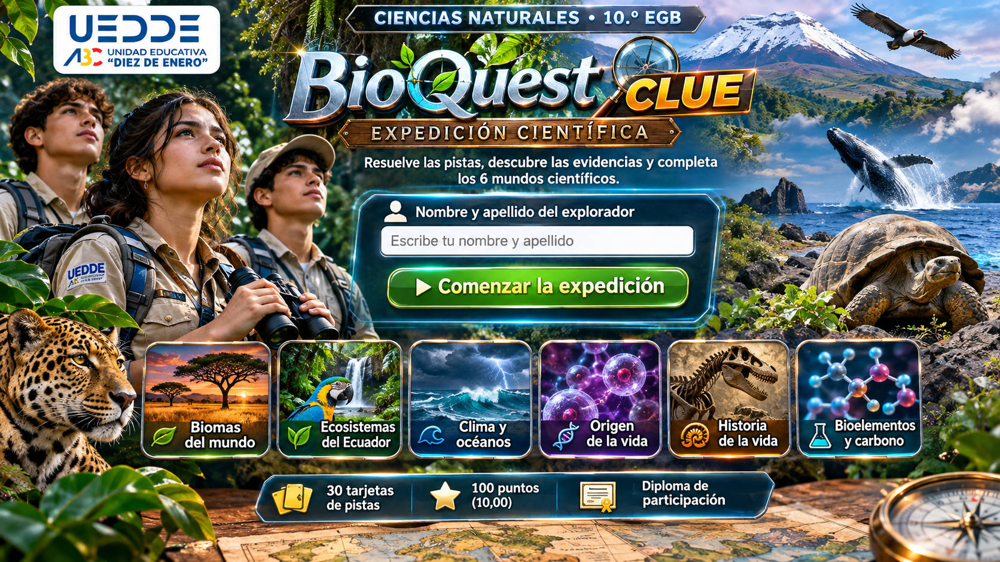

PISTA 1 DE 30

🏆✨
¡Expedición completada!
Terminaste BioQuest CLUE con los 6 mundos científicos. Ya puedes imprimir tu diploma de participación.
UNIDAD EDUCATIVA
DIEZ DE ENERO
Ciencias Naturales · 10.º EGB
DIPLOMA DE PARTICIPACIÓN
BioQuest CLUE — Expedición Científica
Se otorga el presente reconocimiento a
por participar activamente en el juego interactivo de práctica sobre biomas, ecosistemas del Ecuador, clima y océanos, origen de la vida, historia de la vida y bioelementos.
0
puntos sobre 100
0,00
equivale a /10,00
🔬🌿🌊🦖🧪
“El conocimiento se explora, se descubre y se conquista”.
Los resultados solo existen en esta sesión. Si cierras o recargas, todo se borra.